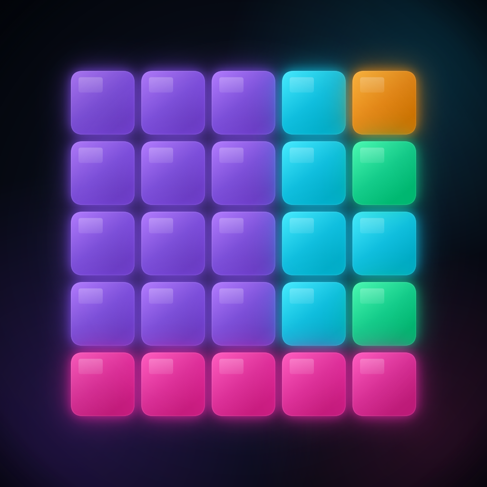

ShiftBlast è un gioco puzzle che ho ideato e scritto da zero per iPhone e Mac. Si gioca su una griglia: con uno swipe si fanno scorrere tutti i blocchi nella stessa direzione, e quando una riga o una colonna si riempie viene eliminata. L'obiettivo è tenere la griglia libera il più a lungo possibile e fare punteggio.
Le meccaniche che ho costruito vanno oltre il semplice "riempi la linea":
seed, così una partita può essere rigiocata identica. Mi è servito soprattutto per testare i bug.Il punteggio base è di 400 punti a linea, a cui si sommano i bonus di chain e overdrive. La difficoltà sale con il punteggio e con il numero di mosse, in livelli (tier) che ho tarato a mano.
L'ho scritto in Swift con SwiftUI. La scelta tecnica di cui sono più contento è aver separato nettamente la logica di gioco dall'interfaccia: tutte le regole stanno in un motore (GameEngine) fatto di funzioni pure su uno stato Codable, mentre le viste si limitano a disegnare quello stato. Questo mi ha permesso di cambiare animazioni e grafica senza toccare le regole, e di ritrovare i bug più facilmente.
| Linguaggio e UI | Swift, SwiftUI · ~6.000 righe di codice in tutto il progetto |
| Classifiche | Game Center con classifica personale e globale, più una schermata classifica a tutto schermo |
| Social | Classifiche tra amici e notifiche quando un amico ti supera |
| Monetizzazione | Abbonamento con StoreKit e schermata paywall; banner pubblicitari AdMob con richiesta di consenso |
| Pubblicazione | Pubblicato sull'App Store; pagine Privacy e Termini ospitate su GitHub Pages |
| Extra | App companion per Mac ("Relay") e una piccola landing page del gioco |
Non è nato già finito. L'ho costruito a tappe, e ogni tappa è rimasta registrata nella cronologia del progetto su Git:
Quando l'Overdrive ripuliva il tabellone, i blocchi venivano rimossi di colpo: sparivano e basta, senza l'animazione di eliminazione. Ho capito che il problema era il punto in cui li toglievo dallo stato. Ho fatto passare la rimozione attraverso lo stesso insieme di blocchi "in eliminazione" (clearingBlockIDs) usato dalle linee normali, così l'animazione parte anche per l'Overdrive.
Le prime partite diventavano ingiocabili dopo poco e si somigliavano tutte. Ho ammorbidito la curva di difficoltà e reso più vari gli spawn, così le partite durano di più e ognuna è diversa dalla precedente.
Sui blocchi al neon non si distingueva bene quale fosse appena comparso. Ho alzato il contrasto dei blocchi e abbassato il bagliore di quelli fermi, in modo che la comparsa di un nuovo blocco "pulsasse" e si notasse.
ShiftBlast è il progetto in cui ho imparato di più, perché mi ha costretto a occuparmi di tutto: l'idea, il codice, i bug, la pubblicazione e le persone che poi ci giocano davvero.